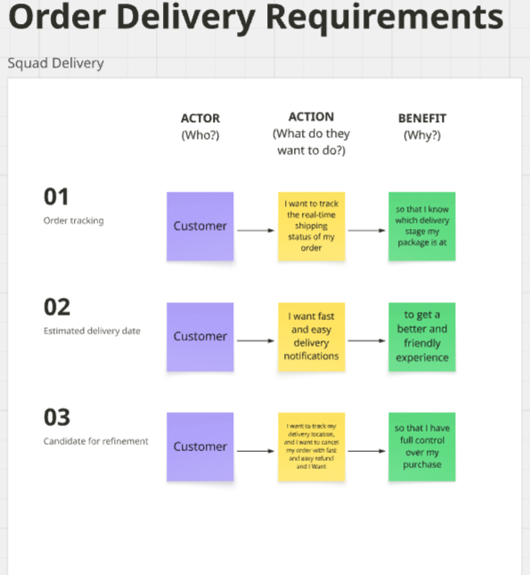
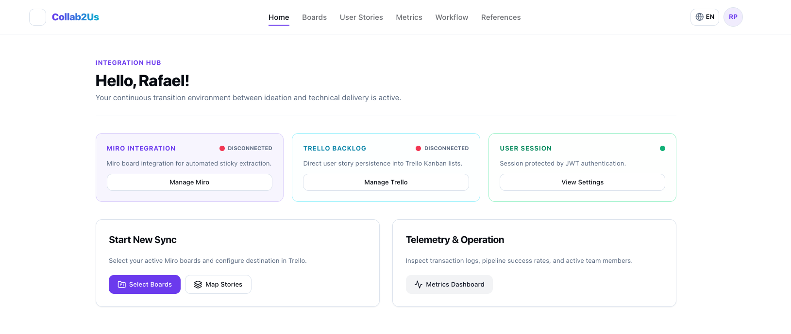

The Problem in Software Development
In requirements workshops, stakeholders capture ideas on visual boards such as Miro, and the Product Owner has to turn them into well-scoped user stories in a backlog, such as Trello. Done by hand, this hand-off loses context; done only with generative AI, it requires checking whether the suggestions match what stakeholders expected. Collab2Us supports this transition: the tool proposes, the Product Owner decides.
Consider a day in the life of Ana, a Product Owner

Ana
Product Owner at an online store
After a workshop with her team, Ana's Miro board holds three candidate stories, built from the notes and their connections:
US01Order tracking. As a customer, I want to track the real-time shipping status of my order, so that I know which delivery stage my package is at.
US02Estimated delivery date. As a customer, I want fast and easy delivery notifications, to get a better and friendly experience.
US03Candidate for refinement. As a customer, I want to track my delivery location, and I want to cancel my order with fast and easy refund and I want… so that I have full control over my purchase.
Why human curation matters
US03 combines two different needs (tracking the location and cancelling with a refund), ends with an unfinished fragment (“and I want…”) and has a vague benefit. The QUS and INVEST indicators help flag problems of form, but deciding how to split the story and what each part means to the customer is up to the Product Owner.
With AI support, Ana can split US03 into two stories:
As a customer, I want to track my delivery location, so that I know where my order is.
As a customer, I want to cancel my order and receive a quick refund, so that I stay in control of my purchase.
And an acceptance criterion for the first one:
Given an order in transit, when the customer opens the order details, then the system shows the latest delivery location and the time of the update.
Ana re-assesses, decides and exports the stories to the User Stories column in Trello. The export report records the cards created, and the source links let anyone go back from each card to the workshop notes.
Proposal: Collab2Us
Collab2Us is a web application that takes ideas from the collaborative board to the backlog in four steps. The tool proposes and organizes; the Product Owner follows every step, validates and decides.
- 0Integration setup. The user connects their Miro and Trello accounts and authorizes access to the boards.
- 1Extraction and structuring. Chooses the source board, the target board and the column; the tool reads the notes and connections and builds candidate stories.
- 2Quality and curation. QUS and INVEST support the review; the Product Owner edits, re-assesses and selects. Optional AI suggests rewordings, splits and BDD criteria.
- 3Export and traceability. The stories become Trello cards, linked to their source notes, with on-demand checks for divergences.
![Infographic in Portuguese, “Collab2Us: from the collaborative board to the backlog”. The Product Owner follows every step, validates and decides. Step 0, integration setup: connects Miro and Trello and authorizes access to the boards. Step 1, extraction and structuring: selects source, target and column and turns notes and relations into candidate stories. Step 2, quality and curation: QUS and INVEST support the review, the Product Owner edits and selects, with optional AI that rewords, splits stories and suggests BDD criteria. Step 3, export and traceability: creates Trello cards, keeps references and checks divergences on demand. The tool supports; the Product Owner leads the decisions.](../assets/img/proposta.webp)
Explore the home screen
Hover over or tap the numbers to learn about each part of the home screen.

Menu and top bar
Home dashboard
How you can take part
If you have been invited to the study, start with the Informed Consent Form. The session instructions become available once you accept.